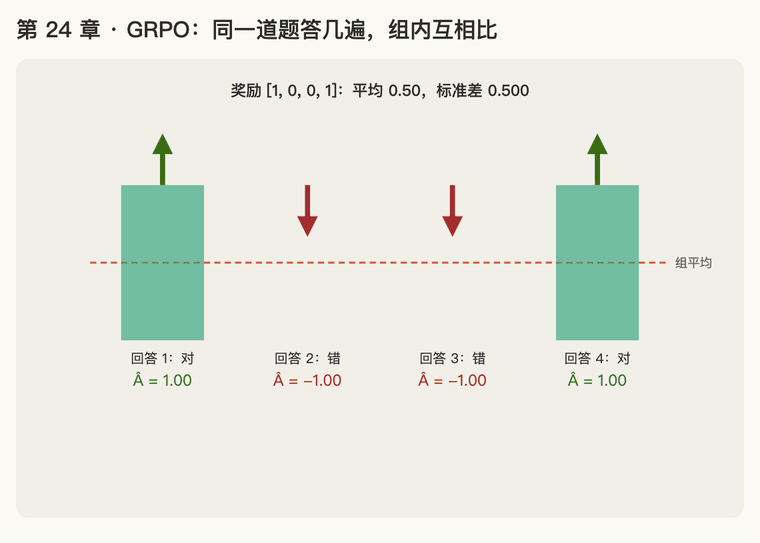

第 24 章 · 收尾：全书地图、PPO 到 GRPO、接下来做什么
本章回答：24 章学过的东西怎么串成一张图？LLM 训练里的 GRPO 和 PPO 差在哪？学完以后去做哪些作业、读哪些论文？
讲解日期：2026-11-13 · 上一章：第 23 章 从 TRPO 到 PPO · 下一章：—
对应原文：CS 285 第 14 讲 LLM RL（lec-14.txtL202–L280：Language models and policy gradients、Value function baselines & GAE、"Baselining without value functions … this is called GRPO" L260–L265、Reference model regularization L266–L272）；DeepSeekMath 论文 §4.1（papers/deepseekmath-grpo-2402.03300.txtL943–L1050，组内优势 L1044–L1050）；CS 285 第 4 讲算法分类（lec-04.txtL195–L207）
本章缩写：LLM = Large Language Model（大 / 语言 / 模型）；GRPO = Group Relative Policy Optimization（组 / 相对 / 策略 / 优化）；RLHF = Reinforcement Learning from Human Feedback（从人类反馈中强化学习）；KL 见第 23 章；std = standard deviation（标准差）；HW = Homework（作业）；CS336 = Stanford CS 336（Language Modeling from Scratch）。全部缩写见 附录 · 缩写与术语表
讲解
第一步：全书一张图（2026-11-13）
第 1–4 章 问题是什么
智能体看状态、做动作、拿奖励 → 回报 G = 奖励加起来（γ 打折） → 期望 = 按概率的平均
第 5–9 章 把问题写成数学（MDP）
环境 p(s', r | s, a)、策略 π(a | s)
价值 v_π、q_π ── Bellman 期望方程（今天 = 眼前 + γ × 明天，取平均）
最优 v*、q* ── Bellman 最优方程（平均换成 max）
第 10–12 章 知道 p：动态规划
策略评估（反复套期望方程）→ 策略改进（对 q 贪心）→ 策略迭代 / 价值迭代 → GPI
第 13–16 章 不知道 p：边试边学
探索与利用（ε-greedy）、增量更新"旧 + α(目标 − 旧)"
MC（目标 = 真实回报 G）、TD（目标 = r + γV(s')）
SARSA（on-policy）、Q-learning（off-policy，直接学 q*）
第 17–19 章 状态太多：函数近似 + 价值路线
梯度下降、v̂(s, w) → DQN（经验回放 + 目标网络）→ Double DQN（挑和打分分开）
第 20–23 章 直接调策略：策略梯度路线
∇J = E[G ∇log π] → REINFORCE → baseline、reward-to-go 降方差
→ Actor-Critic（δ 当优势）、GAE（λ 调偏差 / 方差）→ 重要性采样、信任区域 → PPO（剪比率）
两条主路线（CS 285 第 4 讲 L195–L207 的分类）：
| 价值路线（value-based） | 策略路线（policy gradient / actor-critic） | |
|---|---|---|
| 学什么 | \(q_*\)，挑 max 当策略 | 直接学 \(\pi_\theta\)（常配一个评委 V） |
| 代表 | Q-learning、DQN、Double DQN | REINFORCE、A2C/A3C、TRPO、PPO |
| 数据 | off-policy，能用回放缓冲区，省样本 | 大多 on-policy，费样本但稳 |
| 动作 | 离散动作好办，连续动作难取 max | 离散、连续都行 |
| 用在 | Atari 游戏 | 机器人运控、LLM 训练 |
贯穿全书的三句话：
- 递推：\(G_t = R_{t+1} + \gamma G_{t+1}\)（第 3 章）→ Bellman 方程 → TD → GAE，都是它；
- 更新句式：新 = 旧 + 步长 × (目标 − 旧)（第 13 章），换了无数种"目标"；
- 偏差 vs 方差：MC 无偏方差大，TD 方差小有偏（第 15 章）；baseline、reward-to-go、GAE、PPO 都在这条线上做取舍。
一句话：前半本把问题写成 MDP 和 Bellman 方程，中间讲不知道 p 时怎么学，后半本分价值和策略两条路线走到 DQN 和 PPO。
第二步：把 PPO 用到 LLM：一句话就是一条轨迹（2026-11-13）
CS 285 第 14 讲（lec-14.txt L197–L228）的对应关系：
| 强化学习 | LLM |
|---|---|
| 状态 s | 题目（prompt）+ 已经生成的词 |
| 动作 a | 下一个词（token，Transformer 讲义第 22 章） |
| 策略 \(\pi_\theta(a \mid s)\) | 语言模型输出的下一个词的 softmax 概率 |
| 一局轨迹 | 生成一整个回答 |
| 奖励 | 回答完以后打一个分（答对数学题 = 1，答错 = 0；或奖励模型打分） |
这是第 20–23 章的策略梯度直接搬过来：\(\nabla\log\pi\) 就是"让这个回答里每个词的 log 概率变大"，乘上优势；PPO 的剪裁照用（L212–L213："importance-weighted estimator (e.g., PPO)"）。
三个要"聪明地设计"的地方（L237–L243）：
- 选一个好的 baseline（第三步）；
- 加一个正则项（第四步）；
- 设计或学一个奖励（人类偏好 → 奖励模型，L282–L310 Bradley-Terry；本书不展开）。
一句话：LLM 里状态是上文、动作是下一个词、一局是一个回答、奖励在最后；第 20–23 章的 PPO 原样搬过来。
第三步：GRPO：不要评委，同一道题答几遍互相比（2026-11-13）
PPO 用在 LLM 上的麻烦（lec-14.txt L244–L254）：PPO 要一个评委 \(\hat V\)（第 22 章）。在 LLM 里，评委也得是一个和语言模型差不多大的网络（"either add a new head or make a copy of the entire network"）：显存翻倍、训练也更难。
GRPO 的想法（lec-14.txt L260–L265；DeepSeekMath L943–L1050）：不训练评委。对同一道题，让模型生成一组 G 个回答，用这组回答的平均分当 baseline：
（DeepSeekMath L1044–L1050：减去组平均、除以组标准差；这个优势分给回答 i 里的每一个词。）
这是第 21 章的 baseline：b = 同一道题下几个回答的平均分。"比平常好多少"里的"平常"，就是"这道题我平时答得怎么样"。除以标准差是第 21 章附录提到的优势归一化。
用数字算：一道题生成 4 个回答，答对得 1、答错得 0：
| 4 个回答的奖励 | 平均 | 标准差 | 优势 \(\hat A_i\) | 读法 |
|---|---|---|---|---|
| [1, 0, 0, 1] | 0.5 | 0.5 | [+1, −1, −1, +1] | 答对的推高，答错的压低 |
| [1, 0, 0, 0] | 0.25 | 0.433 | [+1.73, −0.58, −0.58, −0.58] | 难题：唯一答对的那个被大力推高 |
| [1, 1, 1, 1] | 1 | 0 | [0, 0, 0, 0] | 全对：没有对比，这道题不提供学习信号 |
最后一行很重要：题太简单（全对）或太难（全错）时，组内没有差别，优势全是 0，这道题等于白做。后来的 DAPO（papers/dapo-2503.14476.txt）就专门把这种题过滤掉。
GRPO vs PPO：
| PPO（第 23 章） | GRPO | |
|---|---|---|
| baseline / 优势 | 评委网络 \(\hat V\) + GAE（每个词一个优势） | 同题一组回答的平均分（整个回答一个优势） |
| 额外网络 | 要训练一个评委 | 不要 |
| 剪裁 | \(\text{clip}(r, 1 \pm \varepsilon)\) | 照用 |
| 适合 | 奖励密集、需要逐步打分 | 结果只有对 / 错的推理题 |
一句话：GRPO 不训练评委，同一道题答 G 遍，用组内平均分当 baseline、组内标准差归一化；全对或全错的题没有学习信号。
第四步：别跑太远：参考模型的 KL 正则；接下来做什么（2026-11-13）
问题（lec-14.txt L266–L272）：只追奖励，模型可能学会"钻空子"：输出一些奖励模型给高分、但不是正常语言的东西（L268–L271："avoid producing 'nonsense text'""avoids 'exploiting' imperfect reward models"）。
办法：参考模型正则 reference model regularization：留一份训练前的模型 \(\pi_{ref}\) 不动，在目标里减去新模型和它的 KL 散度（第 23 章第三步）：
β（读"beta"）控制拉得多紧。和第 23 章的区别：PPO 的剪裁 / KL 约束是"每一步别离上一份策略太远"（为了让替代目标可信）；这里的 KL 是"整个训练别离最初的模型太远"（为了别学坏）。两者常常一起用。
全书到这里结束。接下来（按 study-plan）：
| 做什么 | 用到本书哪几章 | 在哪 |
|---|---|---|
| CS 285 HW2：策略梯度（VPG、reward-to-go、baseline、GAE） | 第 20–22 章 | materials/cs285/homework_spring2026/hw2，本机 CPU |
| CS 285 HW3：DQN + Double DQN；SAC | 第 16–19 章（SAC 另需 CS 285 第 11–13 讲） | hw3，CartPole / LunarLander 本机，Atari [GPU] |
| CS 285 HW4：LLM RL（GR-REINFORCE / GRPO） | 第 20–24 章 | hw4 [GPU]；对照 CS336 a5 alignment |
读 PPO 37 个实现细节 + CleanRL ppo.py |
第 22–23 章 | materials/blog/、materials/cleanrl/ |
| 运控专题：PPO / GRPO 在腿足机器人上 | 第 22–24 章 | 运控学习计划、专题笔记 |
| 策略学习全景（PPO / DPO / PRO、LLM RL vs 运控） | 全书 | topic-rl-policy-landscape.md |
| 本书没讲的：model-based（Dreamer、TD-MPC2）、offline RL（CQL、IQL）、探索 | — | CS 285 第 15–19 讲；接 CIS 6280 世界模型 |
一句话：KL 正则让模型别离参考模型太远、防止钻奖励的空子；学完本书，去写 CS 285 HW2–HW4，再接运控专题和 LLM 对齐。
动画演示：GRPO 一组回答互相比；全书地图

可交互版：animations/l24-wrap-up.html（要能点按钮、拖滑块，需要用本地服务打开，见 animations/README.md"跑起来看"）。
怎么看：
- 一道题，模型生成 4 个回答，每个打 0 或 1；
- 算组平均（虚线）和标准差，每个回答的优势 = (分数 − 平均) / 标准差，画成向上或向下的箭头（第三步表格）；
- 依次播放三组：[1, 0, 0, 1]、[1, 0, 0, 0]、[1, 1, 1, 1]（最后一组箭头全为 0）；
- 点"全书地图"切换到第一步的章节图，点一个方块会高亮它依赖的前几章。
练习与作答记录
题 1：一道题 4 个回答的奖励是 [0, 0, 0, 1]。算组平均、标准差（4 个数的标准差：先算每个数减平均的平方，再平均，再开根号），以及每个回答的优势。
作答：（待作答）
题 2：GRPO 为什么不需要评委网络？它的 baseline 是什么？对应本书第几章的哪个想法？
作答：（待作答）
题 3：PPO 里的剪裁（第 23 章）和 LLM 训练里的"参考模型 KL"都是在"别跑太远"。它们各自防的是什么？
作答：（待作答）
口诀
前半写成 MDP 和 Bellman，中间不知道 p 边试边学，后半价值、策略两条路；
递推、"旧 + α(目标 − 旧)"、偏差方差，三句话贯穿全书；
LLM：上文是状态，下一个词是动作，一个回答是一局；
GRPO：同题答几遍，组内平均当 baseline，全对全错没信号；KL 拴住参考模型，别学坏。
本章复习卡片
- R42（GRPO 组内优势 \(\hat A_i = (r_i - \text{mean}) / \text{std}\)；和 PPO 的区别；参考模型 KL 正则的作用）
附录 · 延伸阅读
留给以后深入学习用，不影响本章主线。★ 是建议先读的。
推荐阅读
| 读什么 | 读哪里 | 读它为了什么 |
|---|---|---|
| ★ CS 285 第 14 讲 | cs285-slides/lec-14.txt L197–L330 |
LLM 和策略梯度的对应、GAE 在 LLM 上的问题、GRPO、参考模型正则、RLHF |
| ★ DeepSeekMath（GRPO 原文） | papers/deepseekmath-grpo-2402.03300.txt L943–L1050（§4.1，式 3，Algorithm 1 L1020 附近） |
GRPO 的目标函数和组内优势 |
| DAPO | papers/dapo-2503.14476.txt |
GRPO 的改进：动态采样（过滤全对全错的题）、clip-higher、token 级 loss |
| InstructGPT | papers/instructgpt-2203.02155.txt |
PPO + 奖励模型 + KL 的 RLHF 经典流程 |
| DPO | papers/dpo-2305.18290.txt |
不用强化学习、直接从偏好数据训练（接 CS336 a5） |
| Lambert《RLHF》 | books/lambert-rlhf-book.pdf（文本 text/books/lambert-rlhf-book.txt） |
RLHF 全流程的一本书 |
| CS 285 HW4 | cs285-homeworks/hw4.txt |
GR-REINFORCE / GRPO 的作业说明 |
| 本专题笔记 | topic-rl-policy-landscape.md | PG 改进链、PPO / DPO / PRO、LLM RL vs 机器人运控 |
数学原理
- 组内 baseline 无偏（近似）：同一道题下其他回答的平均分不依赖"回答 i 怎么生成"（第 21 章 baseline 不随动作变的条件）；严格说把回答 i 自己也算进平均会引入很小的偏差，有的实现用"留一法 leave-one-out"（其余 G − 1 个的平均）。
- 标准差：\(\text{std} = \sqrt{\frac1G\sum_i(r_i - \bar r)^2}\)；[1, 0, 0, 1] 时每个偏差都是 ±0.5，平方 0.25，平均 0.25，开根号 0.5。
- KL 正则的样本估计：\(D_{KL}(\pi_\theta\|\pi_{ref}) \approx \mathbb{E}_{\pi_\theta}[\log\pi_\theta - \log\pi_{ref}]\)，逐词累加；GRPO 论文用另一个总是非负的估计 \(\frac{\pi_{ref}}{\pi_\theta} - \log\frac{\pi_{ref}}{\pi_\theta} - 1\)（式 4，L1030–L1040）。
- 一个回答一个优势：GRPO 的 \(\hat A_i\) 分给回答里的每个词，相当于第 21 章"用整局回报"、没有逐词的信用分配；PPO + GAE 能逐词打分但要评委。这是 运控专题 里"GRPO vs PPO 信用分配"动画讲的事。
公式清单
| 公式 | 意思 |
|---|---|
| \(\hat A_i = \frac{r_i - \text{mean}(r)}{\text{std}(r)}\) | GRPO 组内相对优势 |
| \(L = \mathbb{E}[\min(r_t\hat A, \text{clip}(r_t, 1 \pm \varepsilon)\hat A)] - \beta D_{KL}(\pi_\theta\|\pi_{ref})\) | GRPO / PPO 目标 + 参考模型正则 |
| \(G_t = R_{t+1} + \gamma G_{t+1}\) | 全书的递推 |
| 新 = 旧 + α(目标 − 旧) | 全书的更新句式 |
代码对照：把本章的数字用代码算一遍
代码在
cs285-deep-rl/solutions/chapter-code/ch24_wrap_up.py，测试tests/test_ch17_24.py。
同一章的 Jupyter notebook：cs285-deep-rl/solutions/chapter-code/notebooks/ch24_wrap_up.ipynb（讲解和代码放在一起，一格一格边读边跑；代码都写在格子里，Colab 也能直接打开）。
bash cd cs285-deep-rl/solutions/chapter-code uv run python ch24_wrap_up.py uv run pytest # 全书 24 章的测试一起跑
| 讲义 | 代码 | 跑出来 |
|---|---|---|
| [1, 0, 0, 1] | group_advantage([1, 0, 0, 1]) |
[1, −1, −1, 1] |
| [1, 0, 0, 0] | group_advantage([1, 0, 0, 0]) |
[1.732, −0.577, −0.577, −0.577] |
| [1, 1, 1, 1] | group_advantage([1, 1, 1, 1]) |
[0, 0, 0, 0] |
关键几行：
r = np.asarray(rewards, float)
(r - r.mean()) / (r.std() + eps) # eps 防止全对时除以 0
代码里才看得到的：全对时标准差是 0，直接除会得到 0 / 0 = nan（not a number，不是一个数），一个 nan 就能把整个模型的参数全变成 nan。所以分母一定要加一个很小的 eps（这里 \(10^{-8}\)）：分子也是 0，结果正好是 0。
自己改一改（不影响练习答案）：
- 8 个回答里 2 个对：
group_advantage([1, 1, 0, 0, 0, 0, 0, 0])→ 对的 1.732，错的 −0.577。对的越少，答对的那几个优势越大。 - 奖励不只是 0 / 1：
[5, 3, 1, 1]→ [1.508, 0.302, −0.905, −0.905]；把 [1, 0, 0, 1] 放大成[10, 0, 0, 10]，结果还是 [1, −1, −1, 1]：除以标准差以后，奖励的单位不影响优势。